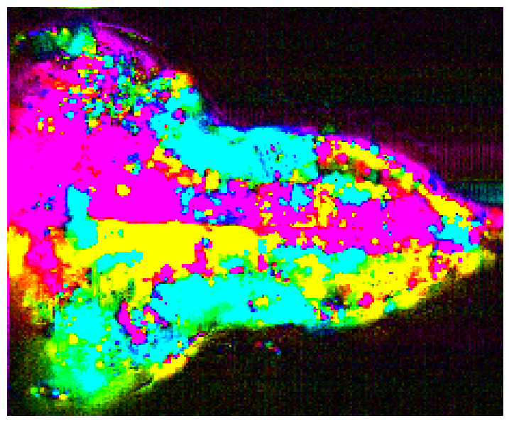
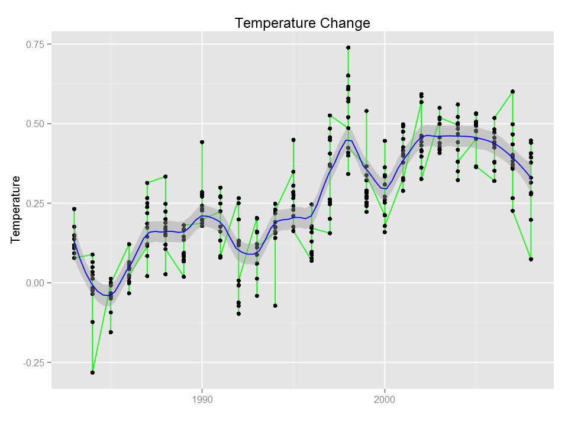
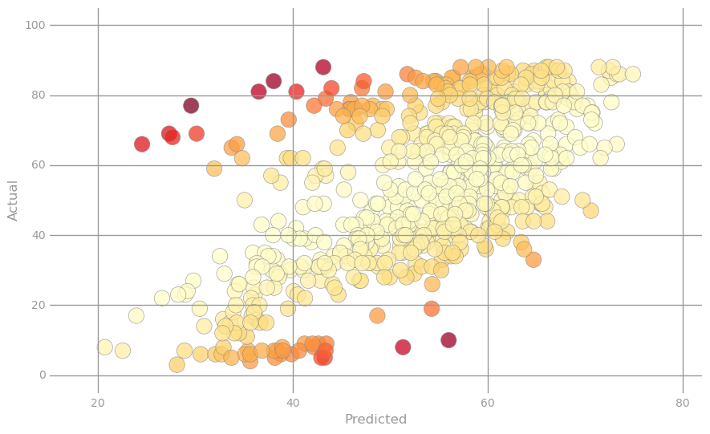
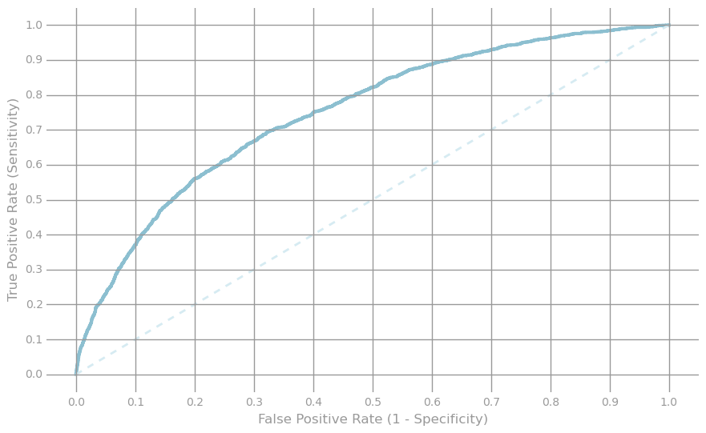
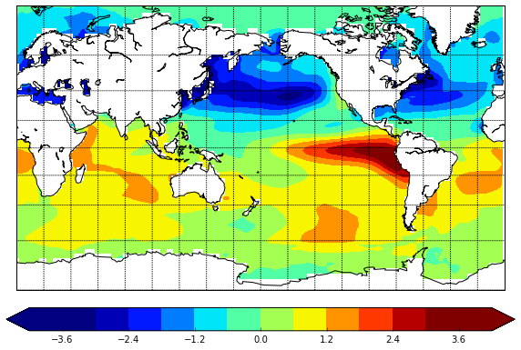

Data Analysis and Machine Learning with Python and Apache Spark
Supervised Machine Learning with R and Python
Here I show how to build various machine learning models in Python and R. The models include linear regression, logistic regression, tree-based models (bagging and random forest) and support vector machines (SVM)... more
Principal Component Analysis of Neuroscience Data with Apache Spark
This lab delves into exploratory analysis of neuroscience data, specifically using principal component analysis (PCA) and feature-based aggregation. We will use a dataset of light-sheet imaging recorded by the Ahrens Lab at Janelia Research Campus, and hosted on the CodeNeuro data repository... more
ggplot in R and Python
The grammar of graphics package (ggplot2) is the best data visualization library in R. The concept of grammar of graphics is also implemented in Python with the library ggplot and it has similar commands to ggplot2... more
Linear Regression with Apache Spark
This lab covers a common supervised learning pipeline, using a subset of the Million Song Dataset from the UCI Machine Learning Repository. Our goal is to train a linear regression model to predict the release year of a song given a set of audio features.... more
Click-Through Rate Prediction with Apache Spark
This lab covers the steps for creating a click-through rate (CTR) prediction pipeline using the Criteo Labs dataset that was used for a recent Kaggle competition... more
Introduction to Machine Learning with Apache Spark
One of the most common uses of big data is to predict what users want. This allows Google to show you relevant ads, Amazon to recommend relevant products, and Netflix to recommend movies that you might like. This lab will demonstrate how we can use Apache Spark to recommend movies to a user. We will start with some basic techniques, and then use the Spark MLlib library's Alternating Least Squares method to make more sophisticated predictions... more

Web Server Log Analysis with Apache Spark
Server log analysis is an ideal use case for Spark. It's a very large, common data source and contains a rich set of information. Spark allows you to store your logs in files on disk cheaply, while still providing a quick and simple way to perform data analysis on them... more
Building a word count application with Spark
The volume of unstructured text in existence is growing dramatically, and Spark is an excellent tool for analyzing this type of data. Here, I am calculating the most common words in the... more
Text Analysis and Entity Resolution with Spark
Entity resolution is a common, yet difficult problem in data cleaning and integration. This lab will demonstrate how we can use Apache Spark to apply powerful and scalable text analysis techniques and perform entity resolution across two datasets of commercial products... more
Introduction to Spark programming
Here, I am using the Python programming interface to Spark (pySpark) in my introductory Spark program... more
Working with NetCDF data using NumPy and matplotlib
NetCDF (Network Common Data Form) data is a self-describing, portable, scalable and appendable machine-independent data format. More information can be found from Wikipedia. This data format is commonly used in Atmospheric science and Oceanography as it is convinient to store various variables of many dimensions. Here, let's see how to open netcdf data in python and generate monthly climatology of global... more
Numpy and Pandas to work with multidimensional arrays
Here, I show the convenience of using the python package numpy together with pandas and matplotlib in working with climate data.... more

Analysing the Madden-Julian Oscillation using Numpy and Scipy
The Madden-Julian Oscillation (MJO) is the major mode of intra-seasonal variability in the tropics. Since its dynamics still remains unclear,
the MJO is intriguing to many atmospheric physicists and mathematicians... more
NumPy Python package and Python lambda expressions
This lab covers NumPy, NumPy and Spark linear algebra and Python lambda expressions, among others... more